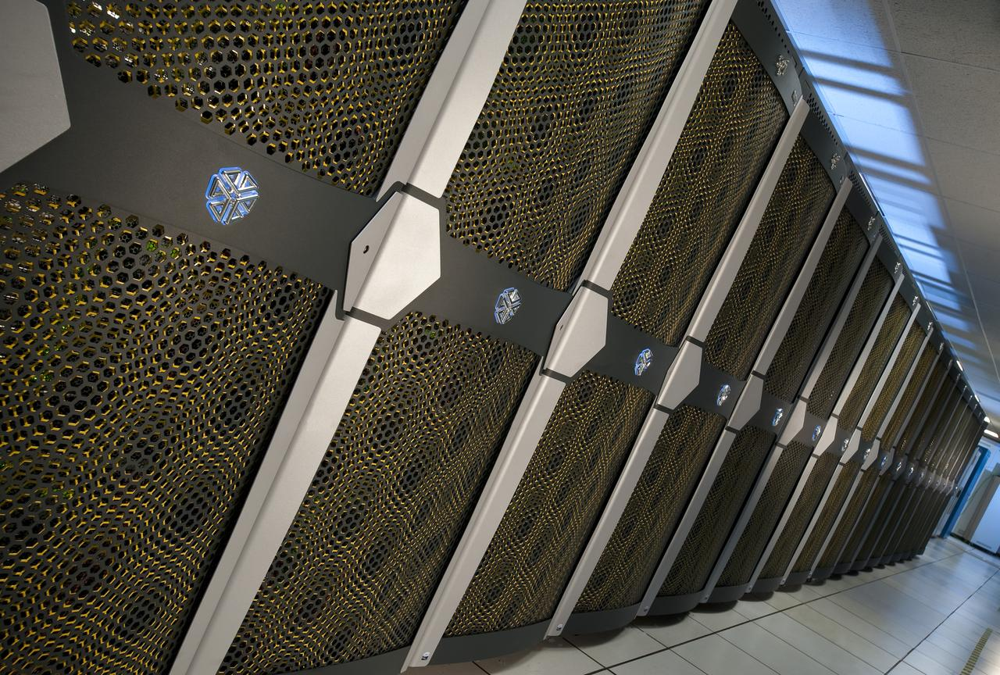
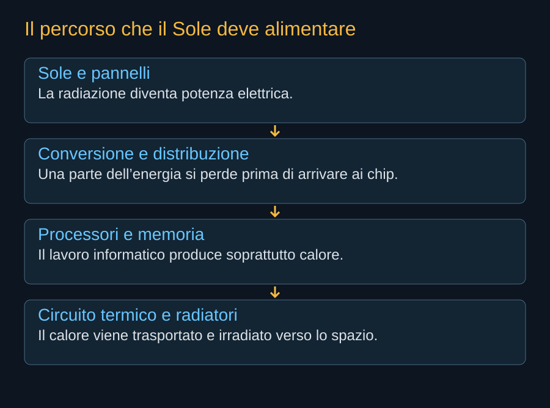

Il problema comincia sulla Terra. Un centro di calcolo può trovare processori, capitali e clienti, ma non trovare abbastanza potenza elettrica nel luogo e nel momento in cui gli serve. La disponibilità di energia non coincide con la disponibilità di un terreno. Occorrono una rete capace di consegnarla, impianti di trasformazione, autorizzazioni e una continuità di servizio compatibile con macchine che devono lavorare per molte ore. Quando questi tempi diventano più lunghi di quelli dell’industria informatica, la geografia del calcolo cambia.
Starmind nasce dall’idea di spostare una parte di questo problema. Invece di alimentare tutto il calcolo attraverso infrastrutture terrestri, SpaceX propone di distribuire satelliti che raccolgano energia solare, eseguano lavoro informatico e restituiscano dati attraverso una rete di comunicazione. Il cliente rimane sulla Terra. A cambiare è il luogo nel quale una parte del lavoro viene svolta.


Una domanda che cresce in luoghi precisi
Il rapporto IEA del 2025 stimava circa 415 terawattora consumati dai data center nel 2024 e prospettava circa 945 terawattora nel 2030 nello scenario centrale. Sono cifre dell’insieme dei centri di calcolo, non della sola intelligenza artificiale. Il secondo numero è uno scenario, non un contatore del futuro. Per comprendere la pressione sulla rete, conta anche dove si concentrano questi consumi: una quota relativamente contenuta della domanda mondiale può diventare una richiesta enorme per una singola regione.
La crescita dell’IA aggiunge una domanda particolarmente densa. Molti processori devono ricevere energia nello stesso edificio e scambiarsi dati rapidamente. Il valore del complesso dipende dall’incontro fra capacità informatica, alimentazione e collegamenti. Una macchina pronta ma senza potenza disponibile rappresenta capitale fermo; una centrale senza accesso a processori e utenti non risolve da sola il problema.


Perché SpaceX può prendere sul serio questa strada
Per quasi tutte le imprese, un centro di calcolo in orbita richiederebbe acquistare separatamente lancio, satellite e rete. SpaceX dispone già di esperienza in questi campi. Questo rende possibile una progettazione comune: cambiare il satellite per renderlo trasportabile, cambiare la produzione per renderla ripetibile, utilizzare una rete esistente per collegarlo. Il vantaggio potenziale riguarda il coordinamento dell’intero sistema, oltre al prezzo di una singola missione.
L’integrazione non elimina la necessità di misurare ogni passaggio. Un satellite che comunica bene non dimostra che possa dissipare il calore di un payload molto più potente. Un razzo che raggiunge l’orbita non dimostra una cadenza industriale con riuso completo. I programmi esistenti forniscono competenze e precedenti; il nuovo sistema deve costruire la propria evidenza.
Il servizio che vale la pena confrontare
La domanda utile è quale lavoro possa essere eseguito meglio, a quali condizioni e con quale costo complessivo. Un’attività lunga, con pochi dati da restituire, può tollerare collegamenti diversi da quelli necessari a una conversazione immediata. Un modello già caricato ha esigenze differenti da un addestramento nel quale migliaia di processori devono sincronizzarsi continuamente. Parlare di “IA nello spazio” senza distinguere questi casi nasconde il problema più interessante.
Il percorso del libro segue questa domanda. Prima la nascita del programma, poi il veicolo e i suoi vincoli, infine la fabbrica, il servizio e le responsabilità. Le fotografie documentano tecnologie e operazioni realmente esistenti. Gli schemi spiegano funzioni e ordini di grandezza. Nell’edizione del 10 ottobre 2026 Starmind rimane un programma di sviluppo: il suo interesse sta anche nella distanza fra ciò che SpaceX vuole costruire e le prove necessarie per riuscirci.
Fonti pubbliche e tracce
- IEA, Energy and AI: domanda elettrica. Rapporto 2025: 415 TWh nel 2024 e scenario centrale di circa 945 TWh nel 2030 per tutti i data center. Stima e scenario, non misure della sola IA.
- SpaceX, Starmind e scheda AI1. Consultata il 10 ottobre 2026. Fonte aziendale per la scheda corrente e gli obiettivi Gigasat; non rapporto di prove in volo.